Saudi Arabia's healthcare sector is undergoing a profound transformation, presenting one of the most compelling investment opportunities in the region. The market is projected to more than double, reaching $152.6 billion by 2034, underpinned by a robust government-led privatization strategy. This initiative, a cornerstone of Vision 2030, involves the privatization of 290 hospitals and thousands of primary care centers, fundamentally shifting the landscape toward private enterprise. The core opportunity lies in this strategic pivot, which aims to increase the private sector's contribution to healthcare GDP to 35% by 2030, creating a dynamic and competitive market for investors and operators focused on infrastructure development, digital health, and specialized care delivery.
Saudi Arabia stands as the largest economy in the Middle East and a prominent G20 member, with exceptional economic fundamentals supporting its healthcare transformation. The Kingdom demonstrates remarkable resilience and diversification progress, with the IMF upgrading its 2025 GDP growth forecast driven by robust domestic demand. The most compelling indicator is the non-oil sector's robust expansion, now representing 52% of total real GDP, well on track to achieve the Vision 2030 target of 65%.
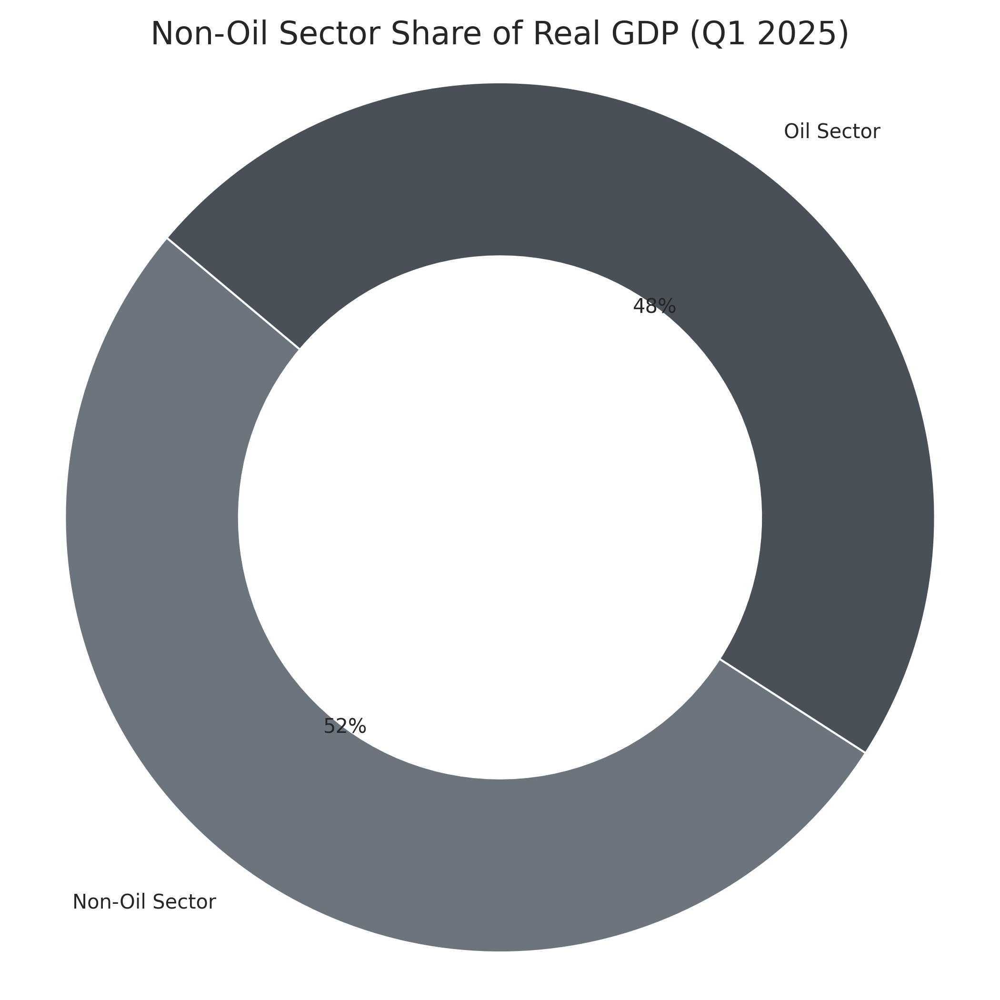
Vision 2030 serves as the overarching national agenda driving Saudi Arabia's economic diversification and modernization across all sectors. With 85% of initiatives complete or on track, the program demonstrates exceptional execution capability. Key achievements include a 113% surge in non-oil exports, a 390% expansion of PIF assets, and the establishment of over 500 foreign company regional headquarters in the Kingdom.
Saudi Arabia maintains best-in-class macroeconomic indicators that provide a stable foundation for investment. The unemployment rate has reached a historic low of 2.8% in Q1 2025, down dramatically from 7.6% in the previous year, surpassing Vision 2030 targets six years ahead of schedule. With a low inflation rate, stable monetary policy, and a government debt-to-GDP ratio of just 29.9%, the Kingdom's fiscal management is conservative and sustainable.
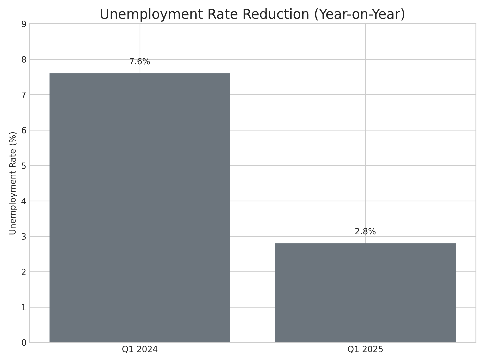
The Kingdom benefits from exceptional demographic tailwinds that drive long-term healthcare demand. The current population of 36.96 million is projected to reach nearly 40 million by 2030. Critically, this is a young population, with a median age of 29.6 years and 62% of the population below age 30. This demographic structure ensures a sustained and growing need for a wide range of healthcare services, from pediatric and maternal care to services for the prime working-age population.
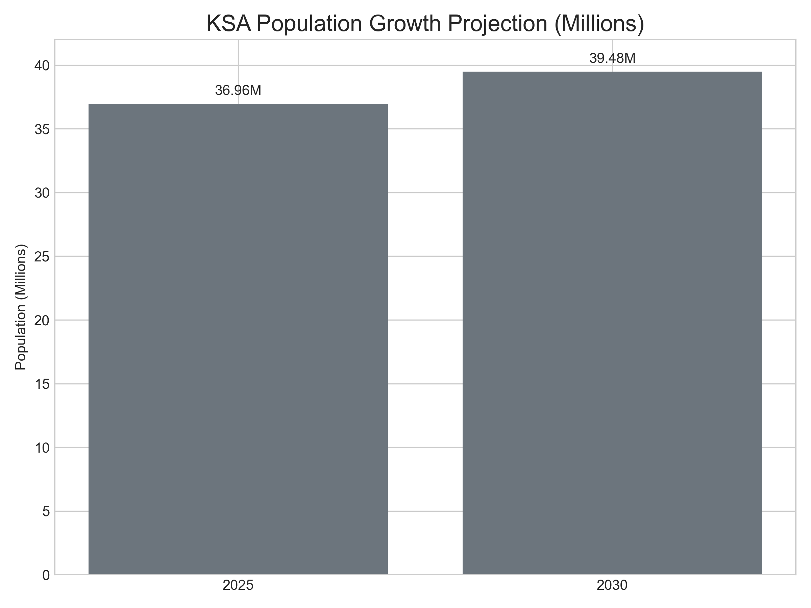
The National Investment Strategy (NIS) is designed to triple investment volume by 2030. For international investors, the legal framework is exceptionally welcoming, highlighted by the **Private Sector Participation (PSP) Law** and the allowance of **100% foreign ownership** in the healthcare sector. This is reinforced by investment-grade sovereign credit ratings of A+ (S&P) and Aa3 (Moody's), reducing investment risk and signaling strong international confidence.
The Kingdom’s healthcare market is demonstrating exceptional growth, with a projected Compound Annual Growth Rate (CAGR) of 9.3% leading up to 2034. This expansion is not just a forecast but is built on a solid foundation of increasing economic contribution and government commitment. The sector's share of national GDP has already grown significantly from 3.7% in 2010 to 6.4% in 2021. Furthermore, government healthcare spending reached SAR 260 billion ($69 billion) in 2025, representing the second-largest portion of the national budget and signaling sustained state-level support for the industry's development.
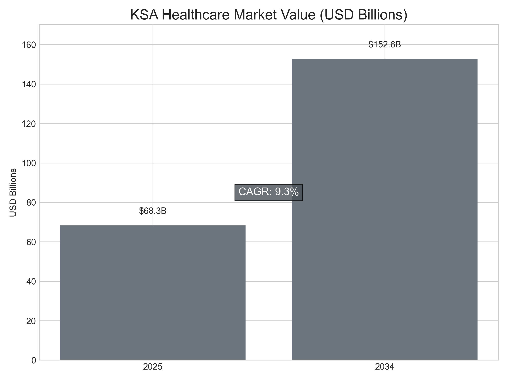
The central pillar of the healthcare sector's growth is the government's ambitious privatization program. This represents a fundamental paradigm shift from a government-dominated model to a private sector-led approach, executed primarily through **Public-Private Partnerships (PPPs)**. The initiative aims to privatize 290 hospitals and 2,300 Primary Health Centers (PHCs) by 2030, unlocking vast opportunities for private investment, management, and operation. This transition is designed to enhance efficiency, improve quality of care, and foster innovation, with a goal to increase private sector participation in total healthcare services from 40% to 65% by 2030.
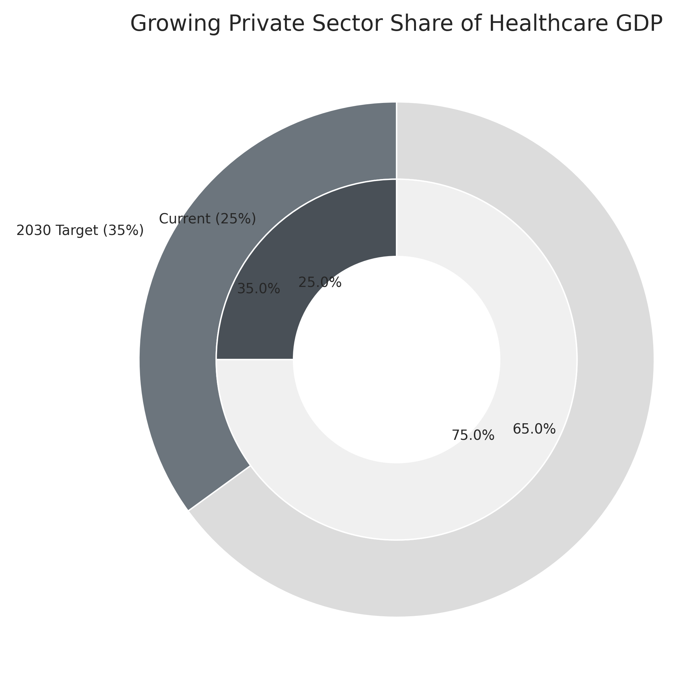
A significant component of the opportunity in KSA's healthcare market lies in addressing its current infrastructure gap. The Kingdom currently has 2.26 hospital beds per 1,000 people, which is below the G20 emerging economy average of 2.85. To meet this average alone, an additional 27,000 beds are required. However, to satisfy the total projected demand driven by population growth and an aging demographic, the Kingdom requires a total of 84,000 new hospital beds by 2030, presenting a massive opportunity for healthcare developers, investors, and operators.
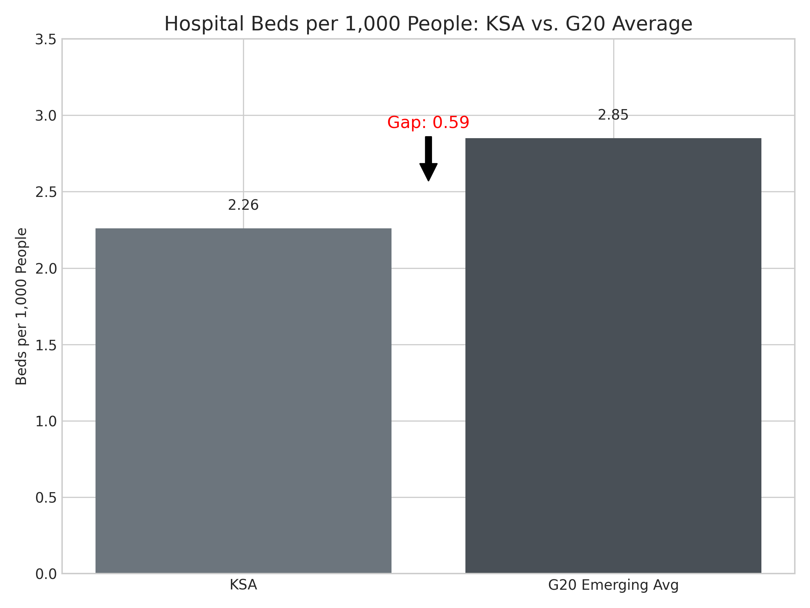
Digital health is a cornerstone of the market's modernization. The Saudi digital health market is projected to grow from $1.46B in 2024 to over $2.8 billion by 2032. This growth is fueled by substantial capital injections, including a $1.5 billion investment in telemedicine and AI-driven diagnostics. The widespread implementation of Electronic Health Records (EHR) and the development of futuristic healthcare ecosystems, such as in NEOM, highlight the nation's commitment to technology-driven healthcare.
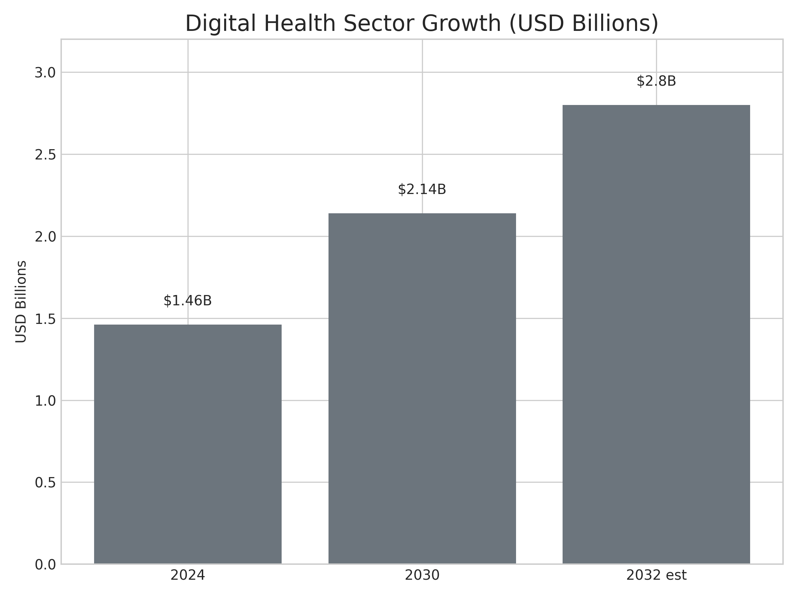
Saudi Arabia is rapidly positioning itself as a regional hub for medical tourism. The market is forecast to experience a staggering 22.5% CAGR, with revenues projected to triple from $200 million in 2024 to nearly $700 million by 2030. The Kingdom is focusing on attracting patients for high-value specialty treatments, including cardiology, oncology, organ transplants, and advanced orthopedic procedures, leveraging its state-of-the-art facilities and strategic location.
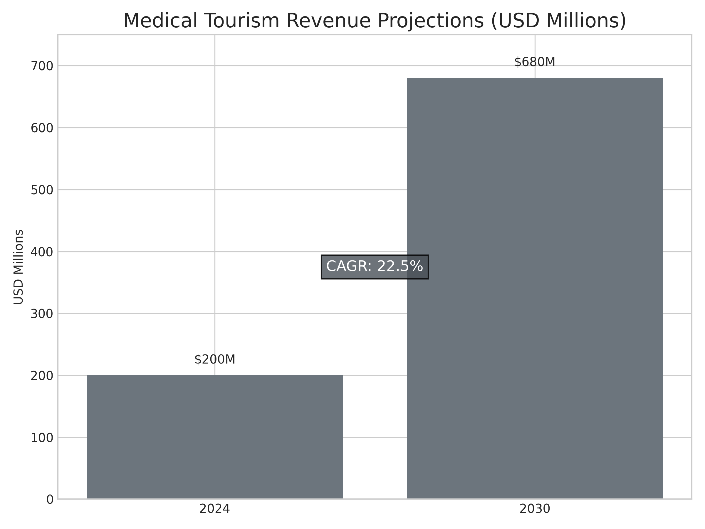
The pharmaceutical market presents a robust opportunity, projected to grow to $11.5 billion by 2032, driven by a focus on local manufacturing and distribution partnerships. Simultaneously, the health insurance market is expanding rapidly, with a forecasted value of $12.5 billion by 2033, growing at a CAGR of 5.14%. The government’s plan for state-funded insurance for all citizens by 2026 will further accelerate demand for private healthcare services.
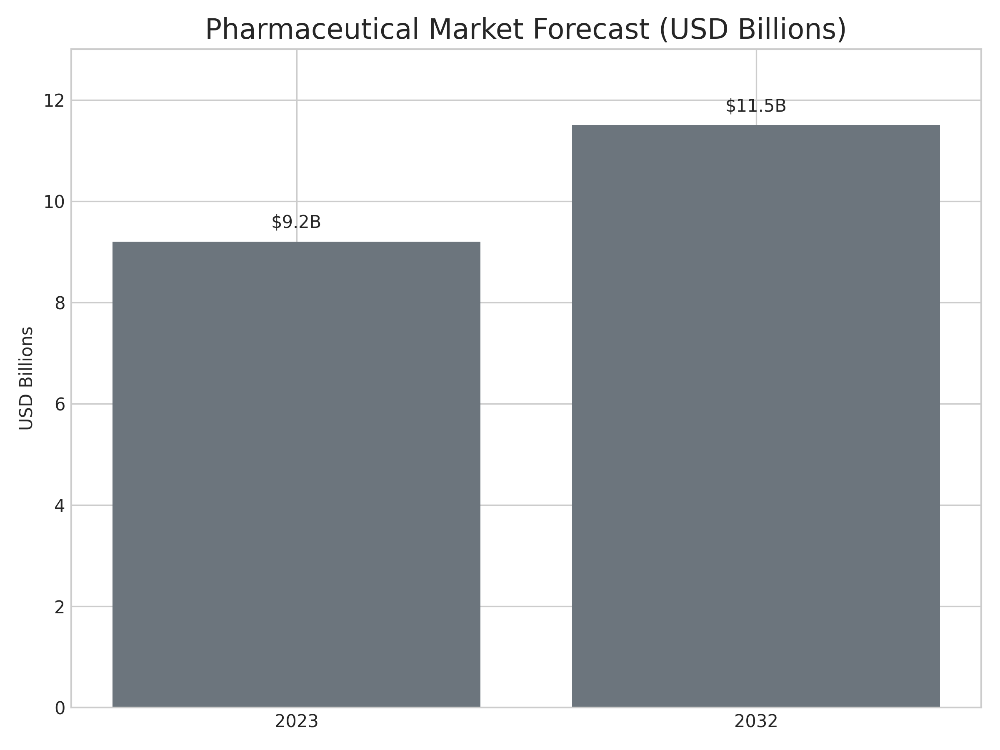
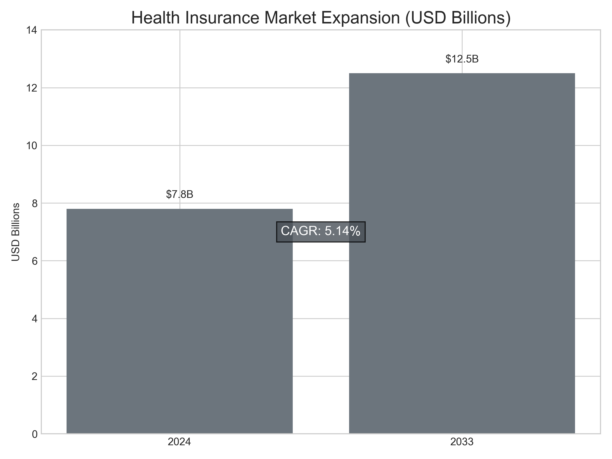
| Rank | Company | 2024 Revenue | Market Share | Key Strengths |
|---|---|---|---|---|
| 1 | Dr. Sulaiman Al Habib Medical Group (HMG) | SAR 11.6B ($3.1B) | ~35% | Market leader, rapid expansion |
| 2 | Dallah Healthcare Company | SAR 3.2B ($854M) | ~12% | Strong profitability, Eastern acquisitions |
| 3 | Fakeeh Care Group | SAR 2.8B ($747M) | ~10% | Integrated model, education focus |
| 4 | Mouwasat Medical Services | SAR 2.9B ($773M) | ~9% | Eastern Province dominance |
| 5 | Al Hammadi Holding | SAR 1.8B ($480M) | ~6% | Premium positioning, Riyadh focus |
*Note: Market share percentages based on private sector healthcare revenue.
The investment landscape is supported by a robust legal framework, notably the **Private Sector Participation (PSP) Law of 2021**, which provides legal transparency, streamlines market entry, and allows for **100% foreign ownership**. Concurrently, the government is implementing aggressive "Saudization" policies to localize the workforce. While a challenge, these policies—which mandate high localization rates in professions like Clinical Nutrition (80%) and Medical Labs (70%)—create significant opportunities for private sector involvement in workforce training, upskilling, and development partnerships to fill an estimated 200,000 new jobs by 2030.
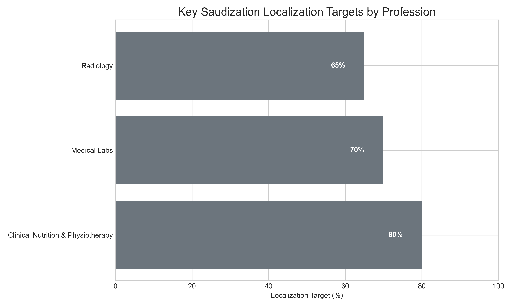
While the opportunities are vast, investors must navigate several key challenges. These include a persistent workforce shortage, rising healthcare costs driven by an aging population, and the logistical challenges of the infrastructure gap. To succeed, private players must focus on several critical success factors: building strong **strategic local partnerships**, integrating **value-based care models** that prioritize outcomes over volume, leveraging **tech-enabled solutions** for efficiency, and developing **specialized services** for high-demand clinical areas.
| Metric | 2025 | 2030 | 2032 | CAGR |
|---|---|---|---|---|
| Total Healthcare Market | $68.3B | $120B+ | $152.6B (by 2034) | 9.3% |
| Private Sector Share | 25% | 35% | 40%+ | - |
| Medical Tourism | $200M | $680M | $1B+ | 22.5% |
| Digital Health | $1.46B | $2.14B | $2.8B+ | 6.77% |